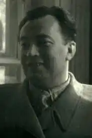

Народився 24 червня 1910 року в селі Олексіївка Коломацької волості Валківського повіту Харківської губернії Російської імперії (тепер — село Богодухівського району Харківської області України) в селянській родині. Батько — юрист, Іван Сергійович, помер молодим. Мати-вдова, Марія Павлівна, самотужки виховувала чотирьох дітей. Вона була родом з села Диканька, що на Полтавщині, з давнього козацького роду Сотників. Козацьке прізвище Нехода — означає "той, що не ходив", був завжди на коні.
З дев'яти років наймитував пастухом. Восени 1923 року вступив до дитячої комуністичної організації "Юні піонери імені Спартака", що після смерті Леніна, у січні 1924 року, була перейменована в піонерську організацію імені Леніна. Був ланковим, пізніше — секретарем піонерської організації села Олексіївки. У 1925 році закінчив чотири класи сільської початкової школи. Того ж року був прийнятий до комсомолу.
На початку 1920-х років над Олексіївкою взяли шефство працівники харківського відділення "Українбанку". Вони відвідували село з лекціями, виставками, привозили книги, газети й журнали. Шефи звернули увагу на Івана і забрали його до Харкова, тодішньої столиці Радянської України. Там влаштували його ліфтером в "Українбанк" (він і жив у тому банку, спав на столі), а також — у вечірню школу "Конторгуч", яка готувала рахівників. У 1925 році в Харкові почала виходити піонерська газета "На зміну" — Іван улаштувався до неї кореспондентом. Цього ж року до Харкова приїхав 13-річний Валентин Бичко. Він приніс у газету свої вірші і там познайомився та подружився з Іваном Неходою. А пізніше — став його біографом. У 1928 році Івана Неходу та Валентина Бичка, як найкращих юних кореспондентів редакції газети "На зміну" і журналу "Червоні квіти", відрядили на Кавказ, звідки вони привезли нові вірші й статті. З 1929 по 1932 рік Іван навчався на факультеті мови та літератури Харківського інституту народної освіти, де отримав диплом учителя. Потім — вчителював, працював у редакціях різних газет і журналів, здебільшого дитячих. З 1935 по літо 1937 року — працював у апараті Спілки письменників України на посаді інструктора секції дитячої літератури. У 1936 році в нього народилася донька Тамара. У 1939 закінчив сценарний факультет Всесоюзного інституту кінематографії (ВДІК) у Москві. З того часу і до 1941 року працював у різних журналах та газетах, був завідувачем літературної частини Київського театру юного глядача імені Горького. У червні 1941 року пішов на фронт. Воював на Південному, Калінінському, 2-му Прибалтійському фронтах. Член комуністичної партії з 1942 року. 4 січня 1944 року в боях на 3-му Прибалтійському фронті був тяжко поранений — осліп на праве око. Лікувався у Ярославському шпиталі. Під час війни писав для армійських газет "Защитник Родины", "Фронтовик". Війну закінчив у званні капітана. Після війни оселився в Києві, де очолив партійну організацію Спілки письменників України, секцію молодого автора та секцію з літературних зв'язків із Радянськими республіками, з 1945 по 1947 рік працював головним редактором видавництва "Молодь", пізніше — редактором журналу "Піонерія". З 1952 року проживав в будинку № 15 по вулиці Хрещатик — так званому Пасажі. Невдовзі після того, як Кримську область було передано до складу Радянської України (1954 рік), очолив Кримську філію Спілки письменників України, фактично створив її — за завданням Спілки письменників України. Був головою філії з 1957 по 1963 рік. У кінці 1950-х років у Криму за підтримки держави була впроваджена державна програма поширення української мови на півострові: кілька років поспіль тиражем у 50 тисяч примірників виходила українська газета "Радянський Крим", у місцевому видавництві "Крымиздат" почали з'являтися книги українських авторів, у тому числі за сприяння вже відомого поета Івана Неходи. Довкола нього згуртувалися перспективні кримські автори-початківці — Степан Литвин, Дмитро Черевичний, Лідія Кульбак, при Спілці письменників почало працювати літературне об'єднання. Останні роки життя Нехода багато подорожував по Україні, республіками СРСР, бував за кордоном — відвідав Чехословаччину, Францію, Англію, Західну Німеччину, Італію. Кілька років очолював Комісію в справах дитячої літератури при Спілці письменників України, виступав з доповідями про завдання дитячих письменників, редагував дитячий журнал. Раптово помер 17 жовтня 1963 року.